Multimedia Producer com experiência em produção musical e audiovisual.
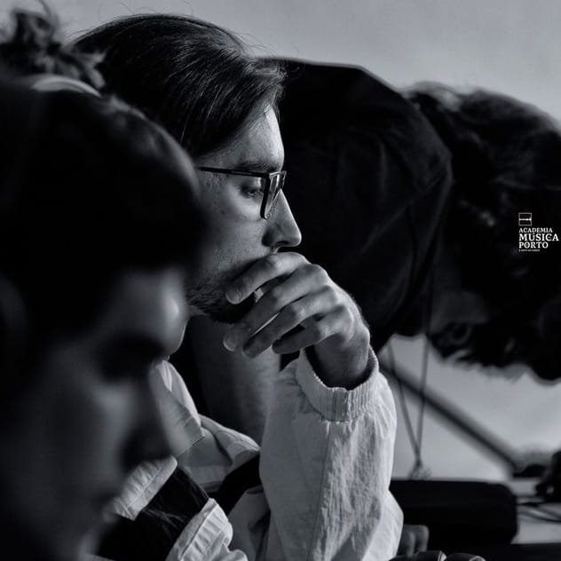
O melhor do meu trabalho em produção musical e em vídeo/imagem.
Mais de 3 milhões de streams em faixas que compus e produzi em FL Studio para artistas nacionais e internacionais.
Animação de abertura do videocast institucional do P.PORTO.
Encerramento e créditos do videocast, com sonorização própria.
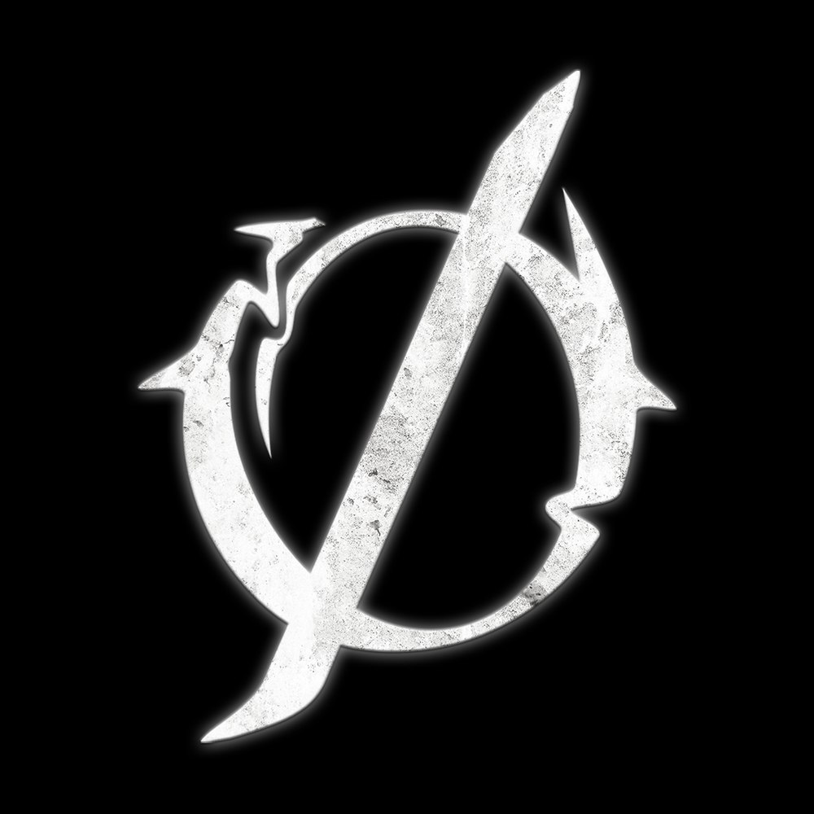
Criação de identidade visual para o projeto musical INVERNØ. Criada e editada no Photoshop.
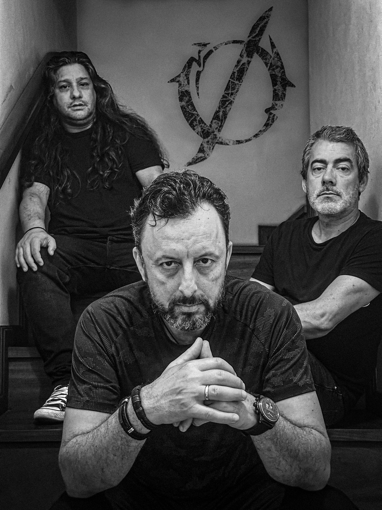
Criação de fotografia de capa para o projeto musical INVERNØ. Captação de imagens para uso em campanhas e divulgação. Editado no Photoshop e Lightroom.
Projetos realizados em diferentes áreas da produção audiovisual.
FAIXAS EM DESTAQUE
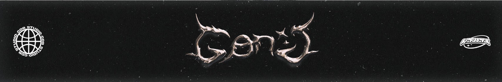
A1_01 SpotifyProdução para vários artistas a nível internacional, como Thxuzz, PL Quest e Kevin O Chris, entre outros. Mais de 3 milhões de streams/visualizações nas plataformas de streaming.
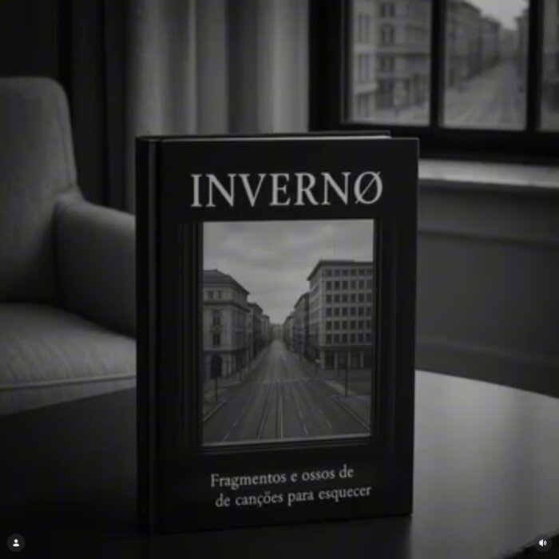
A1_02 InstagramPoema musical "Cidade Vazia" de Rui T, em âmbito de um futuro audiobook. Composição melódica, captação de voz, edição e pós-produção feita por mim.
Poema musical "Amor em Tempo de Guerra" de Rui T, em âmbito de um futuro audiobook. Composição melódica, captação de voz, edição e pós-produção feita por mim.
Animação em loop para as Jornadas Internas de Inovação Pedagógica de 2026, na ESMAE. Realizado no After Effects após organização dos grafismos em Illustrator.
Animação vertical de "save the date" para as Jornadas Internas de Inovação Pedagógica de 2026. Formato nativo para redes sociais.
Animação de introdução do videocast "Hora do Saber", dirigido e produzido no Centro de Inovação Pedagógica do P.PORTO, com moderação de Inês Guedes e Sílvia Geraldes. Organização dos grafismos em Illustrator, realização da animação em After Effects, e sonorização no FL Studio Todos os episódios foram posteriormente editados no Premiere Pro.
Animação de encerramento e créditos do videocast "Hora do Saber". Organização dos grafismos em Illustrator, realização da animação em After Effects, e criação de música original e sonorização no FL Studio. Edição e pós-produção de todos os episódios em Premiere Pro.
Evento de abertura do roadshow do PlurALL, no Porto Innovation Center (PORTIC). Montagem e teste de equipamentos, apoio na realização audiovisual ao vivo, edição e pós-produção completa.
Evento de abertura no Auditório Magno do ISEP, com a participação do presidente do P.PORTO, Ministro da Educação, Ciência e Inovação, e o Primeiro-Ministro Luís Montenegro. Staff, montagem de equipamentos e apoio na realização ao vivo.
Curta-metragem realizada por Gonçalo Terroso, Luís Santos, Guilherme Fangueiro e César Araújo, na cadeira de Design de Produção e Imagem do CTeSP. Cargo: direção de arte, parte do guião, edição de vídeo e pós-produção de som em Premiere Pro e FL Studio.
Re-edição do filme "50 First Dates", com troca de género de Comédia/Romance para Terror Psicológico, em formato de trailer. Edição, color grading e sincronização no DaVinci Resolve e captação de áudio adicional e pós-produção de som no FL Studio.
Anúncio com estética dos anos 80/90 da marca "Fender". Conceção e renderização do cenário 3D no Blender, edição de vídeo no DaVinci Resolve, música original e sonorização feita no FL Studio e expressões em Java no After Effects.
Re-edição do som de uma cena do filme "Iron Man". Além das vozes, nenhum dos sons existe na cena original - tudo recriado do zero.
Mini-documentário (5 min) sobre o projeto musical "INVERNØ", dos músicos Rui Terroso, Gabriel Maia e André Rodrigues. Realizado com Maria Santos e Dinis Vieira. Cargo: direção de arte, edição de vídeo, captação de voz e pós-produção de som.
Projeto realizado no âmbito da cadeira de Efeitos Visuais e Sonoros (2º ano, 1º semestre do CTeSP). Criação de animação 3D do telemóvel no Blender, criação do "holograma", edição e renderização final em DaVinci Resolve, com sonorização original composta em FL Studio.
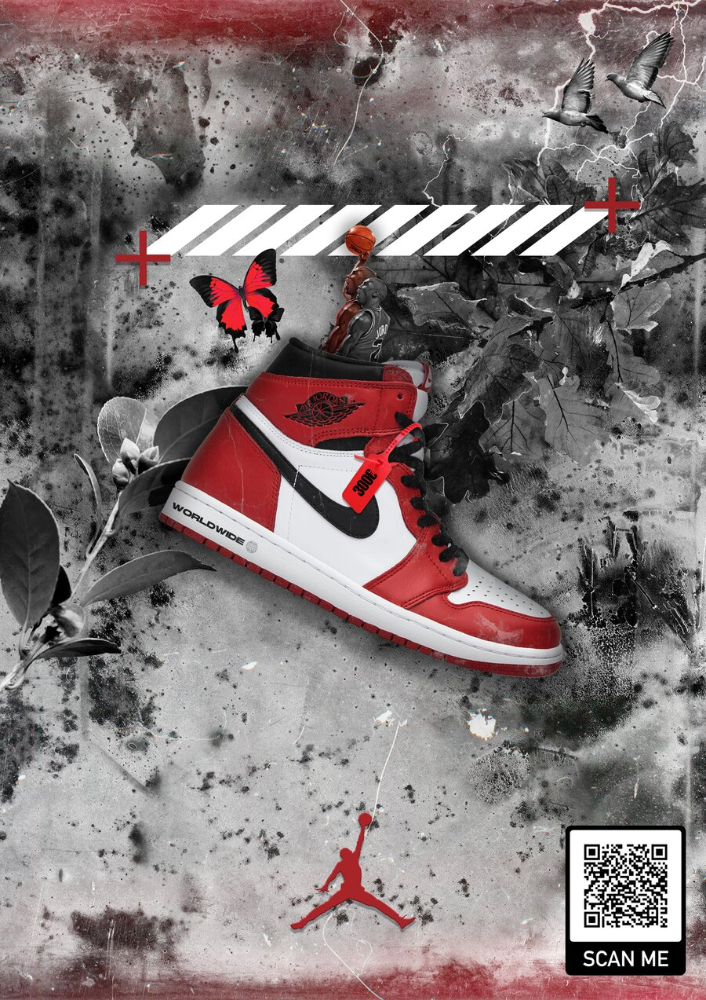
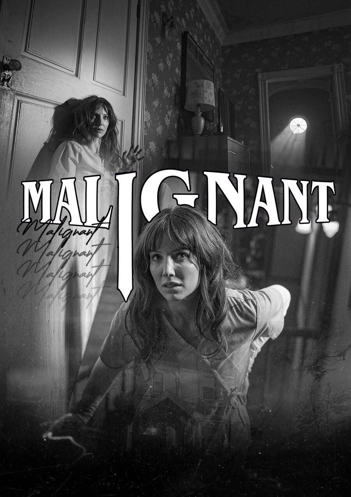
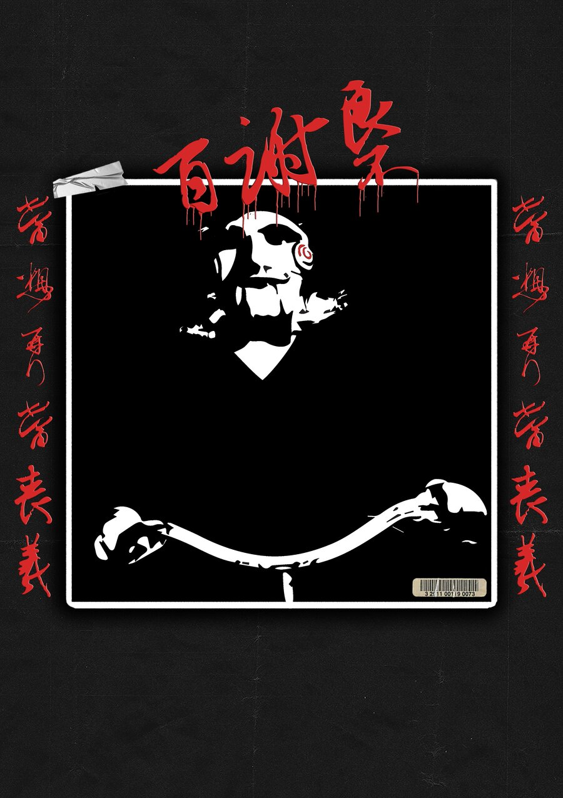
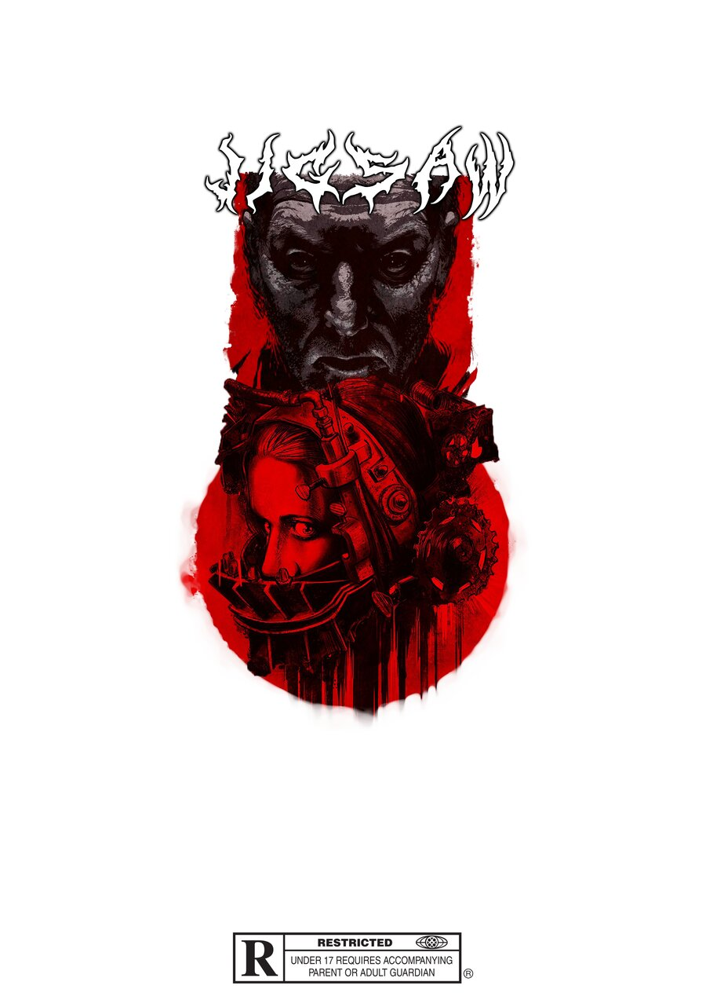
Peças de design gráfico feitas em Photoshop e Illustrator.
Criação de logótipo e captação/edição de imagem para a INVERNØ, projeto musical de Rui T, com os convidados André Rodrigues e Gabriel Maia.
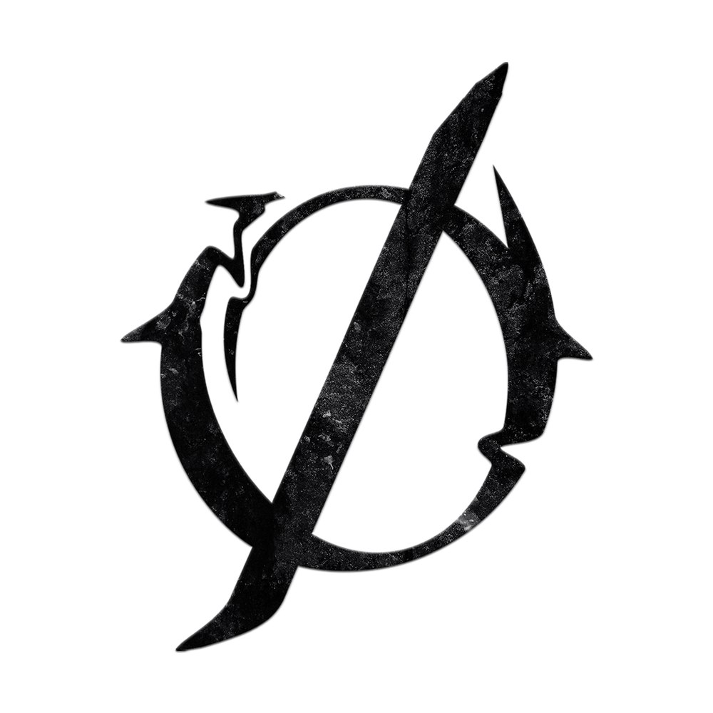
Criação e estudo do logótipo da banda, para aplicação sobre fundos claros. Realizado no Photoshop.
Criação e estudo do logótipo da banda, para aplicação sobre fundos escuros. Realizado no Photoshop.
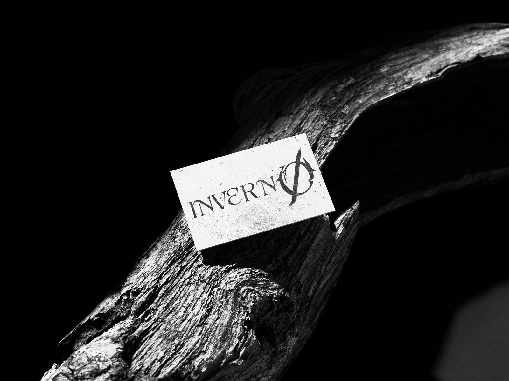
Simulação do logótipo aplicado num ambiente físico, no Photoshop.
Captação e edição de imagem da banda, editado posteriormente no Photoshop, onde foi inserido o logótipo, e tratamento no Lightroom.
Tenho também experiência pontual em modelação e render 3D (Blender / Maya), usada sobretudo como apoio a projetos de vídeo (como o cenário do anúncio Fender acima).
Formação em Motion Design e Efeitos Visuais, com um percurso paralelo em produção musical.
"Produtor musical com mais de 3 milhões de streams e formação em motion design - construo som e imagem que comunicam."
Sou profissional da área audiovisual, com formação em Motion Design e Efeitos Visuais (CTeSP). Domino edição de vídeo, motion graphics, captação de câmara e som, e produção musical em FL Studio - já com mais de 3 milhões de streams creditadas para artistas internacionais.
Realizei estágio curricular no Centro de Inovação Pedagógica do Politécnico do Porto, onde integrei a produção de conteúdos audiovisuais institucionais - da captação à edição, motion graphics e pós-produção final.
Disponível para novos projetos em produção musical, motion design, edição audiovisual e conteúdos para redes sociais. Entra em contacto por qualquer um dos canais abaixo.